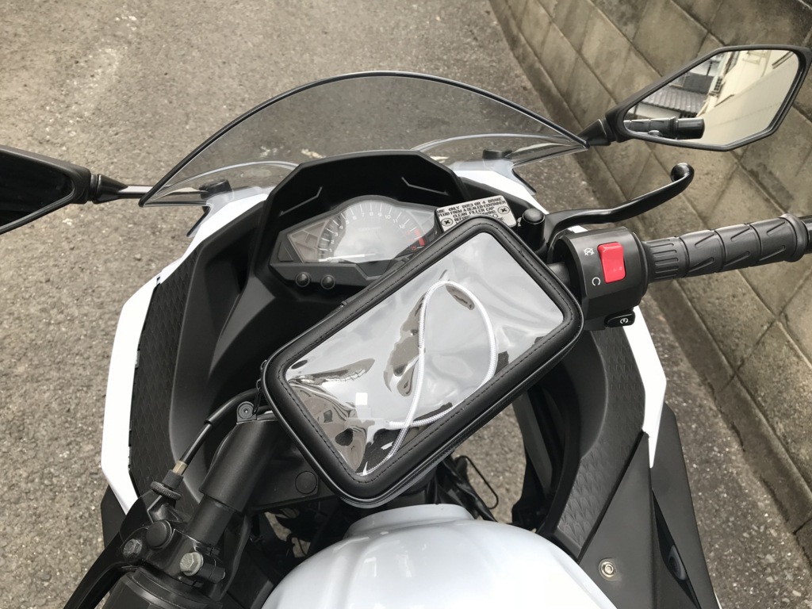
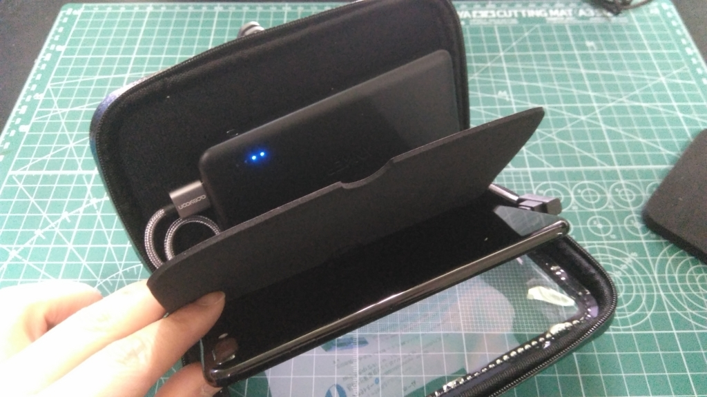
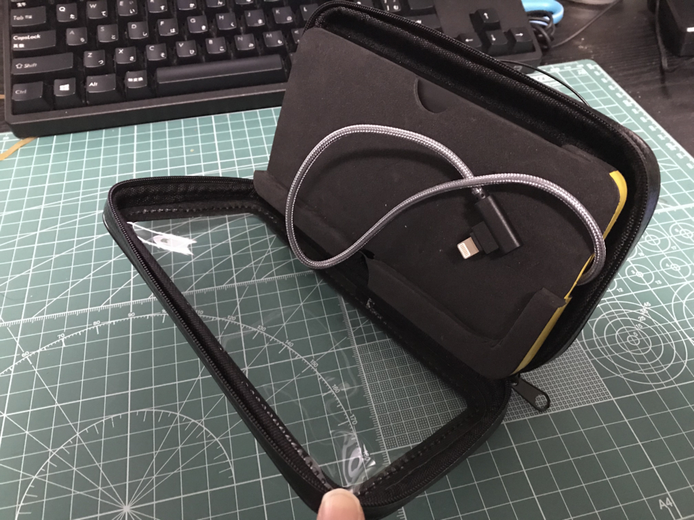
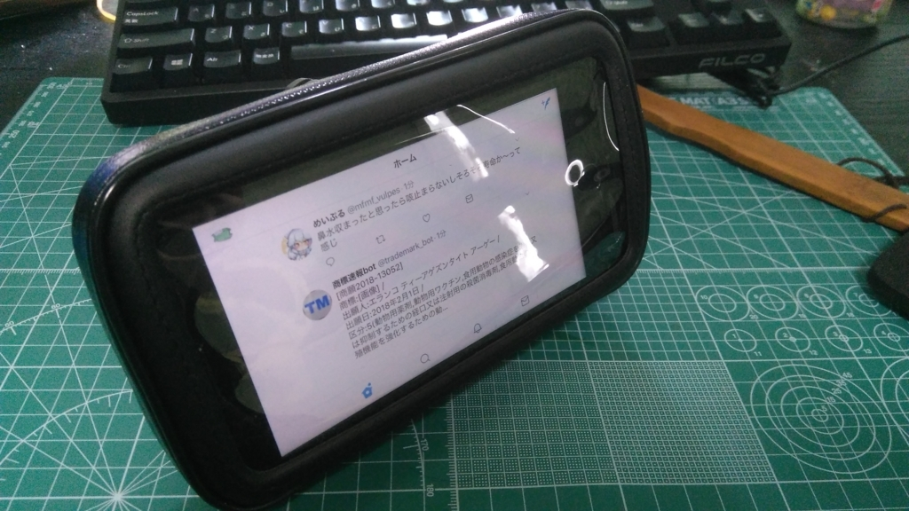
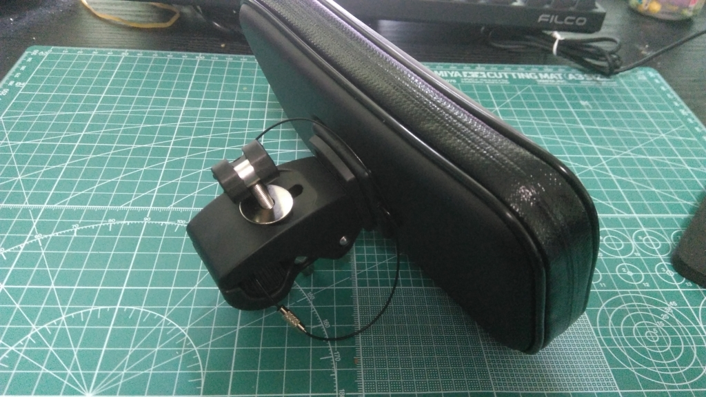
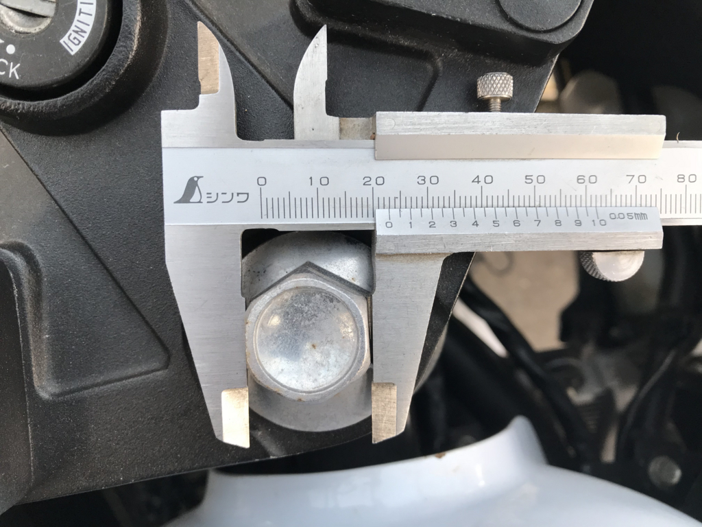
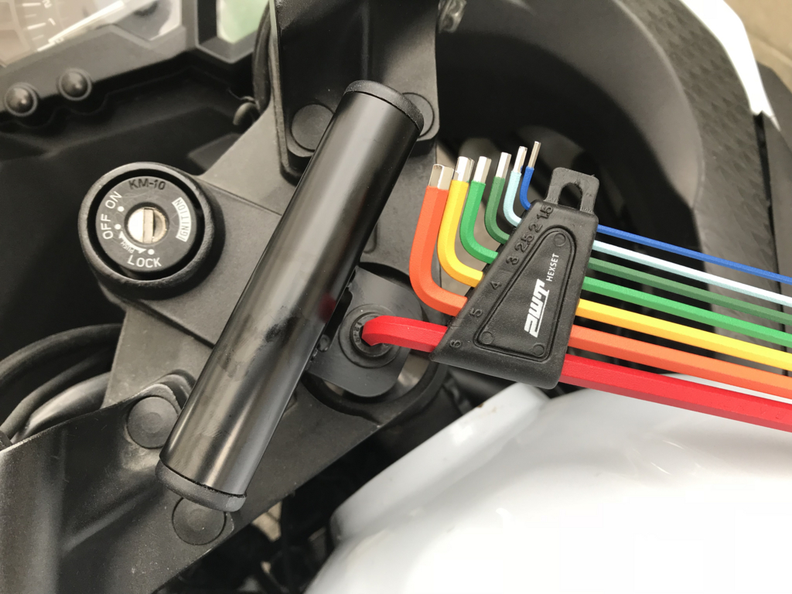

日記：バイクにスマホホルダーをつけた
公開日：
そういえば先週末、免許更新のついでにダイキ（こっち方面にはよくあるホームセンター）に寄って、レンチを買ってきた。ウチの Ninja 250 にスマホホルダーを付けたかったのだ。

スマホホルダーの購入と加工
実は、スマホホルダーはいくつか買ったことがあるのだけど、どれもフィット感がイマイチだったり、作りがチャチだったりで（自転車向けをバイクでも使えると称して売っているのは多い）、付けずに廃棄していた。高速道路を巡行中に振動で脱落でもしたら大惨事だ。
でも、こういう全面カバータイプならばその心配は少ないかなぁ、と思う。

adelphos -02 iphone7/8/Xホームボタン対応 製品保証3カ月 イヤホンホール & 内部ポケット 落下防止ワイヤー付 防水 スマホホルダー
- 出版社/メーカー: adelphos
- メディア: その他
- この商品を含むブログを見る
（自分が買ったのは売り切れなので、アフィリエイトは類似品。後述する iPhone のホームボタンが効かない問題も解決されてるっぽい）
これは割と防水チックにできているのもよいと思う（ただ、過度な期待は禁物）。透明のカバー部分はタッチ操作も受け付けてくれる。さすがに Touch ID までは無理なので、最近の iPhone ではホームボタンが操作できないという致命的な弱点はあるが……まぁ、なんでも言い出したらキリがないからね。
この子は、なかに薄さの異なるウレタン（？）製のパッドが3枚入っていて、いろんな厚みのスマートフォンに対応できる仕組みになっている。ゴツいスマホケースまるごと入れられるのも、クリップ式よりも優れたところやね。
ただ、うちは最近 iPhone 7 Plus をハダカでつかってるので、だいぶ厚みに余裕が出てしまう。

というわけで、サイズの合いそうなモバイルバッテリーを購入して仕込んでみた。
 iPhone & Android各種対応")
Anker PowerCore II Slim 10000 (Power IQ 2.0搭載 大容量モバイルバッテリー) iPhone & Android各種対応
- 出版社/メーカー: Anker
- メディア: エレクトロニクス
- この商品を含むブログ (1件) を見る
ついでに、走行中にスマホやバッテリーが動くのがうっとうしいので、パッドを切り貼りしてピッタリ収まるように加工。

あまりいい仕事とは言えないけれど、まぁまぁ、ちゃんと収まった。

ユーティリティーバーの追加

この子をセパレートハンドルのバイクに乗せるには、設置用のバーをバイクに増設しなきゃいけない。いろいろタイプはあるみたいだけど、今回はデイトナのショートバーをチョイスした。将来的には GoPro なんかも取り付けられていいかもね――なんてことを考えていると、ついつい大きいものをチョイスしがちだけど、こういうのをゴテゴテ付けるのは基本的にダサい。できるだけコンパクトな方がいいのではないかと個人的に思う。
![デイトナ(DAYTONA) マルチバーホルダー ショートロータイプ [ステムホルダークランプ] /ブラック 92750](https://images-fe.ssl-images-amazon.com/images/I/3120RzaLjAL._SL160_.jpg "デイトナ(DAYTONA) マルチバーホルダー ショートロータイプ [ステムホルダークランプ] /ブラック 92750")
デイトナ(DAYTONA) マルチバーホルダー ショートロータイプ [ステムホルダークランプ] /ブラック 92750
- 出版社/メーカー: デイトナ(Daytona)
- 発売日: 2015/03/30
- メディア: Automotive
- この商品を含むブログを見る
これをステムに取り付けるためのパーツ（マウントボルト）も購入。自分の車種にあうやつを調べるのって結構めんどいな。
 マウントボルト マルチバーホルダー(ステムマウント)用 Ninja250/R('08-'13) 78759")
デイトナ(DAYTONA) マウントボルト マルチバーホルダー(ステムマウント)用 Ninja250/R('08-'13) 78759
- 出版社/メーカー: デイトナ(Daytona)
- 発売日: 2013/07/30
- メディア: Automotive
- この商品を含むブログを見る
あとは六角レンチでステムボルトを抜いて、マウントボルトをねじ込み、バーを載せればいいんだけど……ステムボルトの径ってなんぼでしたかね。家にあるやつは小さすぎて合わなかったので、割と大きめのやつみたいだ。

よくわかんなかったので、ダイキでノギスを借りて適当に測ってみたら 20mm ぐらいみたい（ずれているのは撮影の時にズレただけで、ちゃんと計ったぞ！）。ってことで、19-21 のメガネレンチをその場で買ったんだけど……入らなかった。機械音痴だから工具のサイズとかわかんないよ……orz 恥を忍んでおばちゃんに返品＆商品の取り換えを頼んで、こんどは 22-24ぐらいのを買ったと思うんだけど、それでやっとボルトを抜くことができた。
 ロングめがねレンチ(45°) HPM45-2224 二面幅22×24mm")
トネ(TONE) ロングめがねレンチ(45°) HPM45-2224 二面幅22×24mm
- 出版社/メーカー: TONE
- メディア: Tools & Hardware
- この商品を含むブログを見る
ちなみに、マウントボルトにあう六角レンチは 6mm みたい。これは内に常備してある工具で間に合った。


SK11 レインボーボールポイント六角棒レンチセット 9本組 SLBW09EL-RB
- 出版社/メーカー: SK11(エスケー11)
- メディア: Tools & Hardware
- この商品を含むブログを見る
バーの取り付け向きが正しいのかどうかはよくわかんないけど、こういうのは使いながらおいおい調整していく予定。この程度のことでもだいぶめんどくさいなって思っちゃうから、USB 給電は今度バイク屋さんに相談してつけてもらおうかなって思ってる。